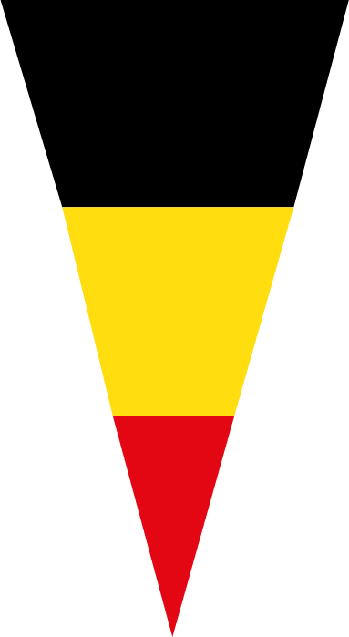
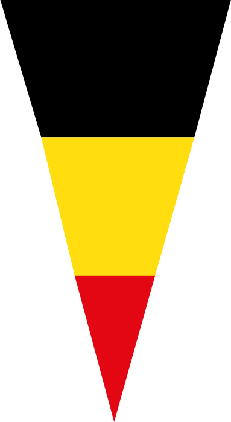
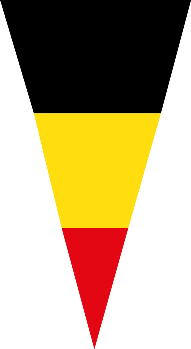
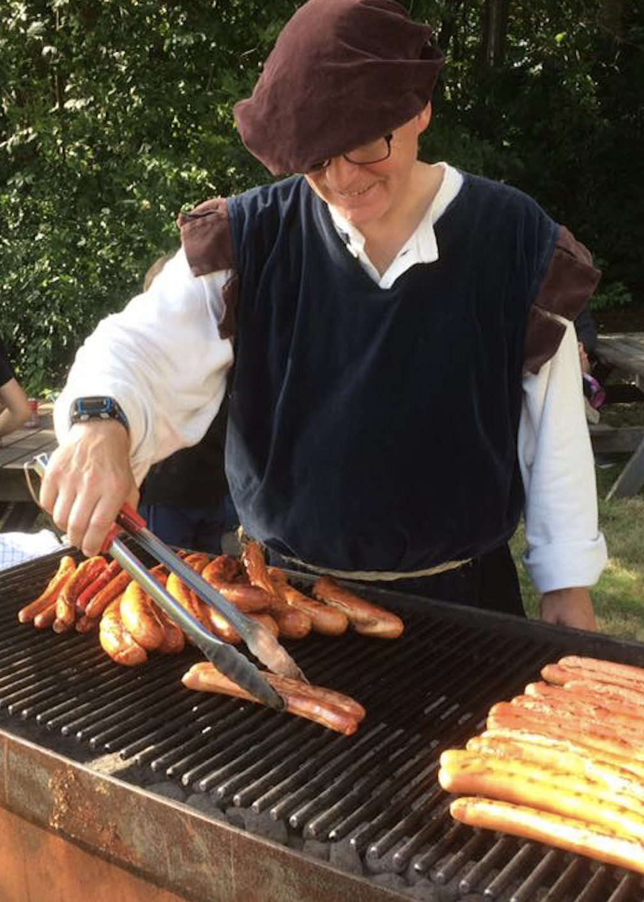
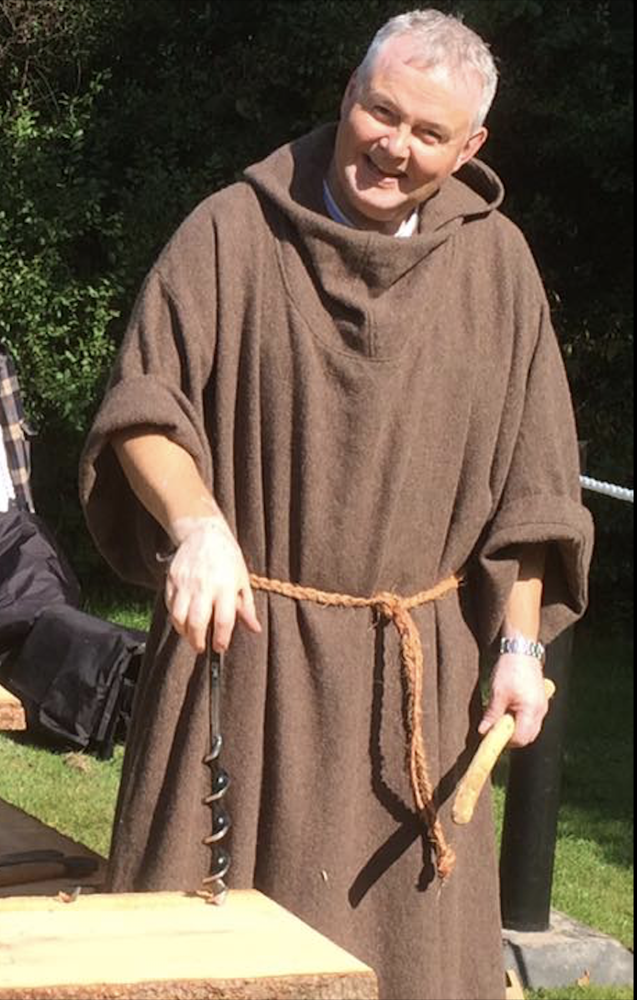
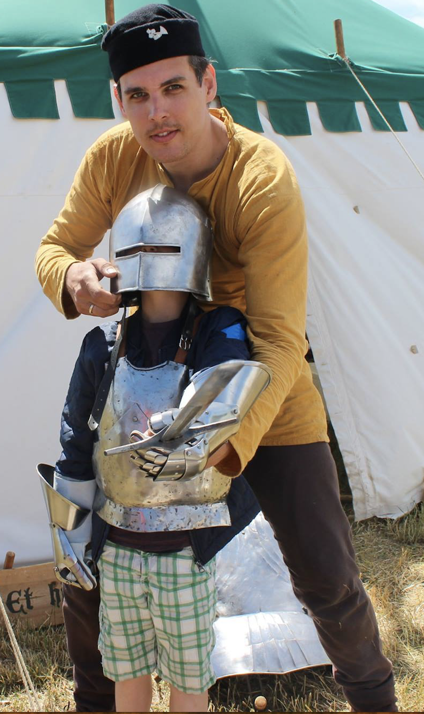
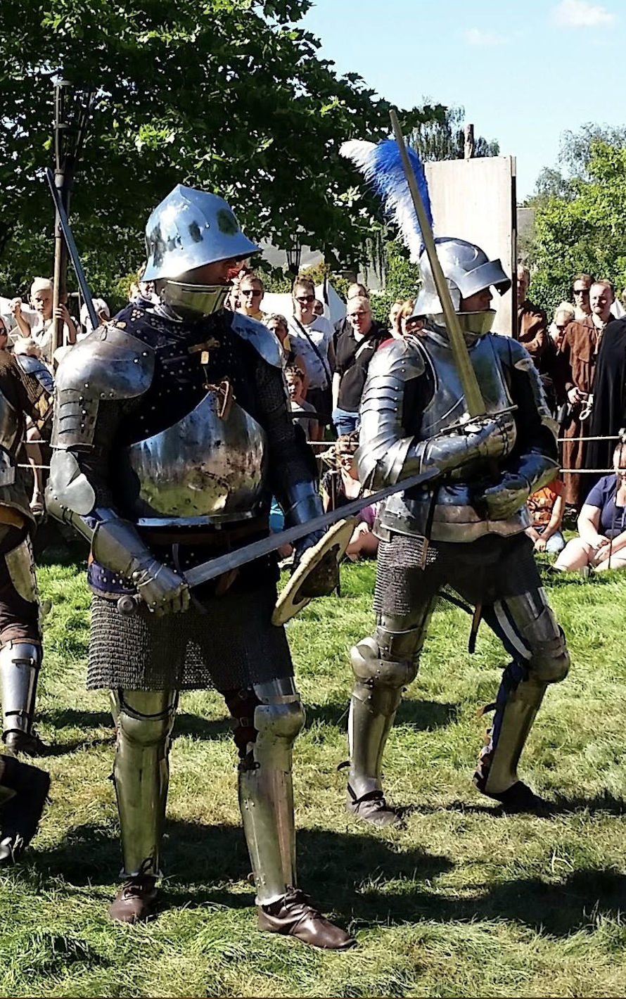

VARDE MIDDELALDERFESTIVAL
 31. AUGUST - 3. SEPTEMBER
31. AUGUST - 3. SEPTEMBER

Når autencititet og hygge går hånd i hånd

31. AUGUST - 3. SEPTEMBER
Når autencititet og hygge går hånd i hånd
Er du også nysgerrig på hvordan man levede tilbage i middelalderen, og er du klar til at tage tilbage i tiden? På Varde Middelalderfestival får du chancen for at komme helt tæt på når madmutter står klar til at lærer dig at male mel, lugten af bål trækker ind i din nylavede munkekutter og musikerne byder op til dans.
Det kan være svært at sætte sig ind i hvad middelalderen er og hvordan man levede den gang. Derfor er der lagt stor vægt på at videndelingen er i højsæde, når du besøger Varde Middelalderfestival. Om du er barn eller voksen har ingen betydning. Her vil du både finde vidensdeling i børnehøjde og mere dybdegående for de hardcore.
For os spiller fællesskab en kæmpe rolle. Både at du føler at du er med i et større fællesskab, når du besøger os, men også som helhed. Når du kommer til Varde Middelalderfestival er vi mange som har arbejdet hårdt for at give dig en hyggelig og god oplevelse. Tak fordi du er med til at bidrage til fællesskabet.
 Spis som en konge lørdag aften, hvor der er lagt op til den helt stor festmiddag med helstegt pattegris med tilbehør og kolde forsyninger. Mere information kommer senere...
 Kom forbi Nicolaus på fredag mellem 10-17, hvor du kan lave din helt egen munkekutte. Han fortæller og viser hvordan de blev lavet og hvordan det var at være fattig i middelalderen.

Drenge og piger – mød op til ridder Edwards væbnerskole!
Her lærer man alt om disciplin, ære og våbenbrug for at blive en ægte ridder. Dagen bliver sluttet af med en kamp mod hinanden på liv og død. På Middelalderpladsen, kan du blive slået til Ridder! Du skal bare først lige drikke 5 iskolde fadaløl. Herefter bliver du slået til Ridder af det runde bord.